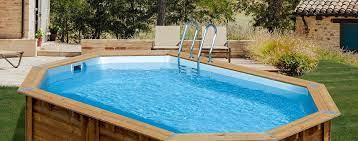

Piscina
Publicado en Septiembre de 2023 por Equipo Adso-2560664-A
Deja atrás el cansancio del día a día y adquiere esta práctica libre de turco y sauna. Aquí podrás relajar tu sistema nervioso, hidratar tu piel si sufres de resequedad, otorgándole un aspecto fresco y radiante, además de mejorar tu respiración.
Durante la sesión de este baño húmedo podrás eliminar toxinas a través del sudor, activar la circulación sanguínea y limpiar a profundidad los poros de tu rostro, evitando así la aparición de acné.

Y que mejor si después te relajas con una deliciosa sesión de masajes. ¿Tentador no? No lo pienses más. ¡Te esperamos!

Este servicio de 1 hora, está dirigido a personas de 18 años en adelante y se debe adquirir bajo previa reserva.